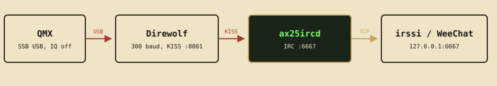

QMX on Debian¶
The QMX is the radio, not a TNC. One USB-C cable gives Debian a sound card and a CAT serial port. Direwolf turns that into AX.25 KISS. rfircd is the IRC server that speaks KISS. Do not put the QMX in Digi mode.

Before you enable the radio
Automatic control and third-party traffic are the two rules that bite gateways. Read Regulatory and your own licence. This page is an operator's checklist, not legal advice.
1. Debian packages¶
Bookworm, Trixie, or later.
libhamlib-utils provides rigctl (PTT). irssi is the IRC client used in
the examples below.
2. Plug the QMX in, join the right groups¶
sudo usermod -aG audio,dialout "$USER"
# log out and back in (or reboot) so the groups take effect
arecord -l
ls -l /dev/serial/by-id/
You want a card named QMX Transceiver (ALSA short name Transceiver) and a
stable serial path such as
/dev/serial/by-id/usb-QRP_Labs_QMX_Transceiver-if00. Use
plughw:CARD=Transceiver,DEV=0, not plughw:1,0 — card numbers move when HDMI
or another USB gadget appears. Do not put /dev/ttyACM0 in a config you intend
to keep; that number moves too.
If PipeWire or PulseAudio has taken the QMX (it often becomes the default sink), Direwolf cannot open it for transmit. Keep desktop audio on the laptop speakers and leave the radio to ALSA:
wpctl status # note the Built-in Audio sink/source IDs
wpctl set-default <sink-id>
wpctl set-default <source-id>
pactl set-card-profile alsa_card.usb-QRP_Labs_QMX_Transceiver-02 off
To make that stick across replugs, drop a WirePlumber rule that disables the QMX for PipeWire (Direwolf still opens it via ALSA):
# ~/.config/wireplumber/wireplumber.conf.d/51-qmx.conf
monitor.alsa.rules = [
{
matches = [
{ device.name = "~alsa_card.usb-QRP_Labs_QMX_Transceiver.*" }
]
actions = {
update-props = {
device.disabled = true
}
}
}
]
Then systemctl --user restart wireplumber.
3. Set the radio: SSB USB, IQ off, TX from USB¶
AIRC is AFSK from Direwolf, sent as ordinary SSB audio. Digi mode is single-tone FSK (FT8-style) and will not work.
| Control | Setting |
|---|---|
| Mode | SSB, upper sideband |
| IQ | Off — Direwolf needs demodulated audio, not I/Q |
| SSB TX source | USB from the PC (CAT SS0;) |
| Frequency | An HF packet allocation used where you are |
4. Direwolf at 300 baud, not 1200¶
HF packet is 300 baud. VHF FM is 1200; that is a different radio. Copy
direwolf-qmx.conf, then edit ADEVICE, MYCALL
(your callsign), and the PTT serial path from step 2.
ADEVICE plughw:CARD=Transceiver,DEV=0
ARATE 48000
MYCALL YOURCALL-1
CHANNEL 0
MODEM 300
PTT RIG 2057 /dev/serial/by-id/usb-QRP_Labs_QMX_Transceiver-if00
KISSPORT 8001
AGWPORT 0
TXDELAY 40
TXTAIL 30
Hamlib model 2057 is QMX. Older hamlib: Kenwood TS-480, model 2028, same serial device.
Leave this terminal running. It should listen on KISS TCP port 8001.
AGWPORT 0 turns off Direwolf's AGW server (port 8000). rfircd speaks KISS,
not AGW, and 8000 is often already taken.
5. Install rfircd¶
See Install. Short version:
curl -fsSL -o rfircd.run \
https://github.com/mashu/rfircd/releases/latest/download/rfircd-x86_64.run
chmod +x rfircd.run
./rfircd.run
AppImage subcommands: ./rfircd.AppImage station … and
./rfircd.AppImage kisshub …. ARM: aarch64 tarball or .run from
Releases.
6. Edit the gateway config¶
The installer writes ~/.config/rfircd/rfircd.toml if that file did not
exist. Set server.name, your callsign, and turn the radio on only when
Direwolf is already listening.
[radio]
enabled = true
callsign = "YOURCALL-1"
paclen = 128
notice_air_relay = true
[radio.tnc]
kind = "tcp"
host = "127.0.0.1"
port = 8001
tx_pacing_ms = 2500
# Cross-check MODEM / TXDELAY / TXTAIL against the governor.
direwolf_conf = "/home/YOU/direwolf-qmx.conf"
# Keep the QMX alive. At 300 baud a full frame is about four seconds of
# unbroken carrier, and the QMX has no thermal headroom to speak of. These
# numbers must match the TXDELAY/TXTAIL in direwolf-qmx.conf.
[radio.duty]
enabled = true
baud = 300
txdelay_ms = 400
txtail_ms = 300
window_secs = 600
max_duty_percent = 25
max_continuous_secs = 30
cooldown_secs = 60
hourly_airtime_secs = 900
max_hold_secs = 120
# Required if you will leave the transmitter unattended. rfircd cannot see
# SWR or PA temperature — Direwolf already holds the CAT port for PTT.
# The command fails closed: until it exits 0, nothing is keyed, IDs included.
[radio.interlock]
command = "/usr/local/bin/check-qmx"
args = ["--max-swr", "2.5"]
interval_secs = 30
timeout_secs = 5
Do not leave a QMX unattended without an interlock
The duty-cycle governor is a model of key-down time. It cannot see a
high SWR or a hot PA. Configure [radio.interlock] so a failing check
inhibits everything, identification included. Sit with the radio
until that command is proven.
Do not raise these without reading Airtime
[policy] limits messages; [radio.duty] limits seconds of key-down.
Only the second one knows how long a transmission actually takes, and only
the second one is between a busy #rf and your finals. RADIO DUTY shows
the live figures.
The 50 % duty ceiling is a bound, not a default: max_duty_percent above
50 is refused, a max_continuous_secs/cooldown_secs pair that would
exceed 50 % in bursts is refused, and enabled = false is only accepted
with a loopback TNC. --check catches all three before you key up.
The checker refuses a fake callsign, an ID interval over ten minutes, and
radio.enabled with no bridged channel. Keep #rf as rf = true.
7. Start the gateway, then the IRC client¶
rfircd -c ~/.config/rfircd/rfircd.toml
# another terminal:
irssi
# /connect 127.0.0.1 6667
# /nick YOURNICK
# /quote CALLSIGN YOURCALL
# /quote REGISTER a-secret-password
# /join #rf
# /quote RADIO
RADIO should show the transmitter ON. #rf is +rm: without a callsign
you can listen, you cannot speak. Without RF-TX your speech stays on IRC.
Change the example OPER password, and hash it (rfircd --hash-password),
before you bind to a public address.
8. First message that actually keys the radio¶
CALLSIGN lets you speak on IRC. Radiation needs RF-TX: OPER, or a
registered nick that a control operator has RADIO GRANTed. Then send a short
line in #rf. If notice_air_relay is on, the server notices
Relayed to RF (YOURCALL-1)…. Watch Direwolf for PTT and a 300-baud frame.
| Goal | Command |
|---|---|
Speak on #rf (IRC) |
/quote CALLSIGN YOURCALL then /join #rf |
| Radiate from IRC | registered nick + RADIO GRANT (or OPER) — usage.md |
| Transmitter status | /quote RADIO |
| Keep nick and callsign | /quote REGISTER <password> then IDENTIFY |
| Control operator | /oper … then RADIO OFF / RADIO GRANT / RADIO HEARD |
9. Optional: a second QMX as the operator radio¶
Same Direwolf setup on that machine, then the station client:
AppImage: ./rfircd.AppImage station --call …. The nick on IRC is the
callsign with - turned into | (YOURCALL|7).
10. If nothing comes back¶
- Direwolf not running, or not on
127.0.0.1:8001— rfircd reconnects, but nothing radiates. Bind failed … Address already in useon port 8000 — AGW, unused here. SetAGWPORT 0. The line that matters isReady to accept KISS TCP … on port 8001.Could not open audio device … No such file or directory— card index moved (HDMI often occupiesplughw:1,0). Useplughw:CARD=Transceiver,DEV=0.Device or resource busyon transmit — PipeWire grabbed the QMX; see step 2.- Not in
dialout— PTT silently fails.groupsshould list it. - QMX still in Digi or IQ — audio looks like noise to Direwolf.
- Hamlib 2057 unknown — switch PTT to
RIG 2028. - No
+von#rf— you skippedCALLSIGN. - Spoke on
#rfbut nothing on the air — no RF-TX grant;OPERorRADIO GRANT. - "Queued for RF … 40s of queue ahead of it" — normal. 300 baud is slow and the
duty limit is doing its job;
RADIO DUTYshows the backlog. - "Not put on the air: the transmit queue is Ns deep" — the channel is busier than the duty cycle allows. Shorter messages, or fewer of them.
- Practice with no RF:
rfirc-kisshub --bind 127.0.0.1:8001and the same toml, indoors. Still do not enable radio toward a real antenna until you mean it.
11. Can Direwolf be left out?¶
Short answer: no, and it is not close.
Direwolf is not a shim here. Between "an IRC message" and "RF out of a QMX" there are four jobs, and rfircd deliberately does none of them:
| Job | Who does it | What replacing it costs |
|---|---|---|
| AFSK/BPSK modulation and demodulation | Direwolf | A soundcard modem: filters, timing recovery, DCD, and enough decoder tolerance to work on a real HF channel. This is the hard part, and Direwolf is a decade of it. |
| ALSA capture and playback | Direwolf | Audio I/O and buffering against xruns |
| PTT over CAT | Direwolf via hamlib | hamlib bindings or a hand-rolled Kenwood-dialect CAT driver |
| AX.25 framing and KISS | Direwolf, and rfircd | Already done in src/ax25 |
The QMX itself cannot fill the gap. It is a transceiver with a USB audio interface and a CAT port — it has no KISS TNC, and its Digi mode is single-tone FSK for FT8-style modes, not AFSK, so it cannot carry AX.25 at all. There is no firmware setting that turns it into a TNC.
So "skip Direwolf" really means "write a soundmodem". That is a real project — DSP, audio plumbing, and a decoder that has to work on a noisy 300 baud HF channel where Direwolf's multi-decoder approach earns its keep — and it would be a separate binary presenting the same KISS socket rfircd already speaks to. The gateway would not change at all.
If the goal is fewer moving parts, the useful options are:
- Run Direwolf as a systemd unit next to rfircd, so it is one
systemctltarget rather than a terminal you have to remember. See Packaging. - Use
kind = "serial"with a hardware KISS TNC (Mobilinkd, TNC-Pi) and drop Direwolf and the sound card — but that is a different radio setup, not a QMX one.
If the goal is no radio at all for testing, rfirc-kisshub already
replaces Direwolf completely:
rfircd never talks to the QMX. It talks KISS to Direwolf. That split is deliberate: audio, PTT and the modem stay in software that already knows hamlib. See Protocol and Design.